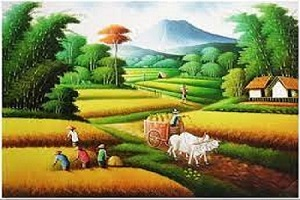
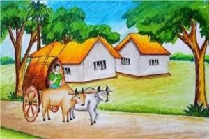
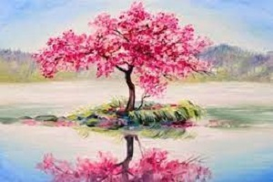
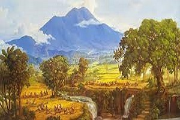
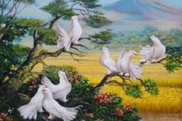
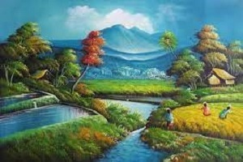

     
Lukisan adalah hasil karya seni yang berasal dari kegiatan melukis atau seni lukis. Hal ini membuat lukisan termasuk dalam karya seni rupa dua dimensi atau terdiri hanya dari dua unsur pengukuran saja, yaitu panjang dan lebar. Dua unsur pengukuran yang ada pada lukisan ini membuat suatu lukisan hanya bisa dinikmati dari satu arah pandang saja. Selain itu, suatu lukisan juga memiliki unsur ruang yang semu atau tidak nyata.
Sejarah lukisan telah berlangsung selama berabad-abad, dengan catatan tertua dari lukisan yang diketahui saat ini berasal dari zaman prasejarah. Lukisan prasejarah ditemukan di gua-gua di berbagai wilayah di dunia, yang menunjukkan bahwa manusia telah lama mengekspresikan diri melalui lukisan. Lukisan tradisional dari berbagai budaya, seperti lukisan rupa di India dan Cina, telah mengalami perkembangan yang signifikan selama berabad-abad. Pada abad ke-14 lukisan Renaissance di Italia menandai kebangkitan seni lukis baru, dengan teknik yang lebih canggih dan representasi yang lebih realistis dari objek.
Pada abad ke-19 dan 20, lukisan mengalami perkembangan yang signifikan dengan munculnya berbagai aliran seni yang berbeda, seperti Impresionisme, Fauvisme, dan Surrealisme. Lukisan juga digunakan dalam berbagai bentuk seni lainnya, seperti seni grafis dan seni digital. Saat ini, lukisan tetap merupakan salah satu bentuk seni yang paling populer dan dihargai, dengan banyak pelukis yang terus mengeksplorasi medium ini dan menciptakan karya-karya yang mengesankan dan inovatif.
Sebagai sarana ekspresi maupun unsur yang mmpu menigkatkan ketertarikan,lukisan dapat dijadikan pula sebagai sarana komunikasi. Selain itu lukisan juga bisa menjadi sarana memenuhi kebutuhan sehari-hari. Banyak pelukis yang kini menjual karya seni mereka pada orang lain sebagai hiasan.